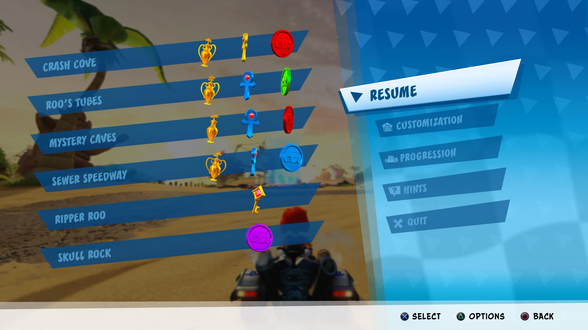
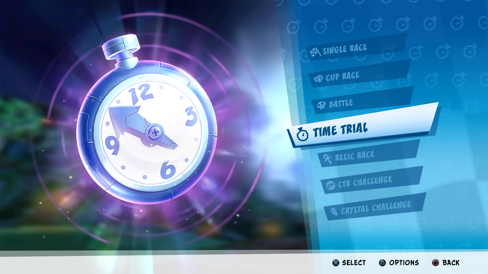
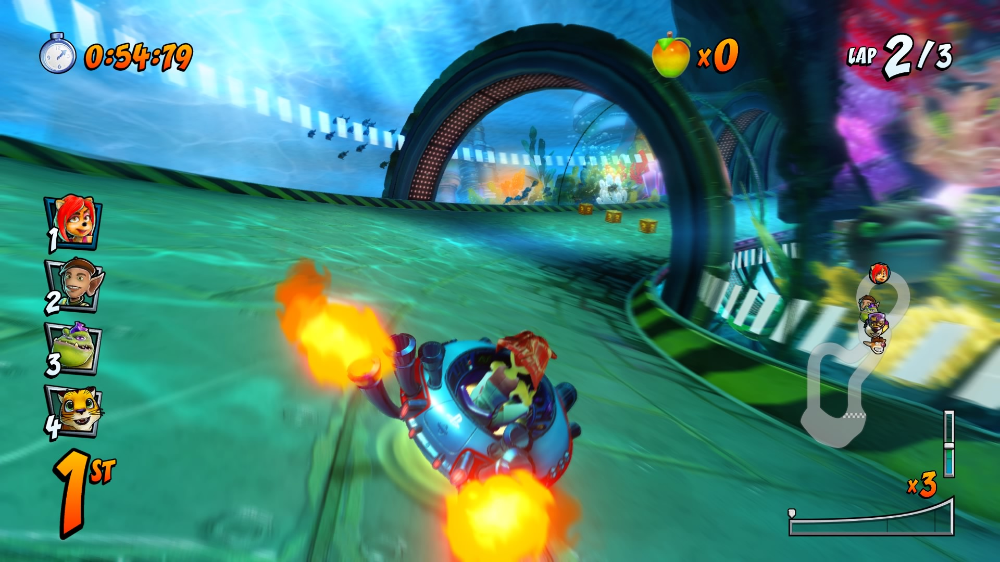

Crash Team Racing: Nitro-Fueled
Reviewed on a base Playstation 4
Crash Team Racing: Nitro-Fueled is a remake of the original kart racer on Playstation along side with tracks and modes from its sequel Crash Nitro Kart.
CTR's adventure mode story follows Crash and friends racing each other when they are forced to partake in a competition by the alien Nitrous Oxide in order to save the world. The adventure mode is similar to Diddy Kong's Racing's campaign structure wise. There are five hub areas that are interconnected in CTR that require players to complete four races to challenge the boss with the exception of one area. Once the boss has been defeated, you are granted a key that unlocks the next area and unlocks optional challenges to complete; these challenges are CTR, Crystal, and Relic. Completing all challenges will grant access to Gem Cups, then afterwards, the true final battle with Nitrous Oxide.
Outside of the story there are numberous activities to participate in from Single Races, Battles, Time Trails and from adventure mode, Relics, Crystal and CTR challenges. There are over 31 tracks in the game and special maps for certain modes.
CTR: Nitro-Fueled is not a Mario Kart clone but a kart racer that requires skill to win races; winning determines wether or not you can drift-boost. In order to drift-boost, press and hold one of the bumper buttons while turning, then press the opposite bumper when the meter on the bottom right turns red/orange up to three times.

The other offering in this package is the inclusion of Online and the Pitstop. Pitstop is an in game store that sells skins, characters, karts and stickers; all these items don't cost real currency, but earned currency from all modes called Wumpa Coins. The online mode offers traditional races and battle modes. Unfortunately, there are problems with connection that haven't been fixed yet aswell as global savefiles getting corrupted when playing Time Trails on PS4, but it happens rarely.
As a person who never played the original, Crash Team Racing: Nitro-Fueled is an excellent game. The tracks, cutscenes and character designs are incredible and all the modes included are plenty and fun. Learning to drift-boost efficiently will take practice, but truely mastering them will be harder. I highly recommend this game for players that are looking for more skill based kart racer.